Soru 1Cevap: E
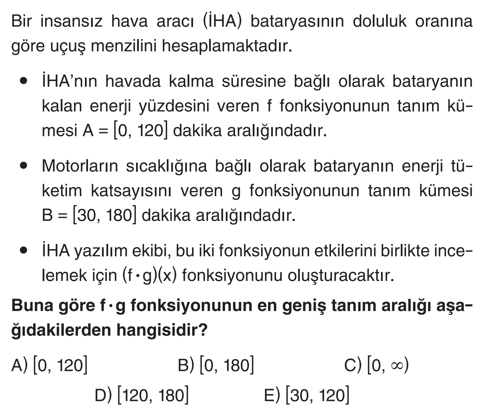
Çözüm
- $f$'nin tanım kümesi $[0,120]$.
- $g$'nin tanım kümesi $[30,180]$.
- $f\cdot g$: kesişim $[30,120]$ (E).
Cevap: E
Soru 2Cevap: C
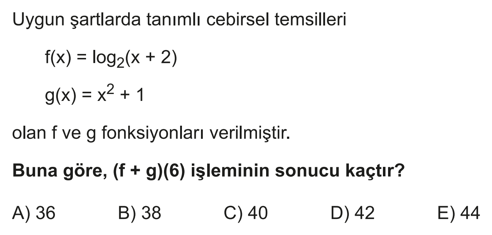
Çözüm
- $f(6)=\log_2 8=3$.
- $g(6)=36+1=37$.
- $(f+g)(6)=40$ (C).
Cevap: C
Soru 3Cevap: B
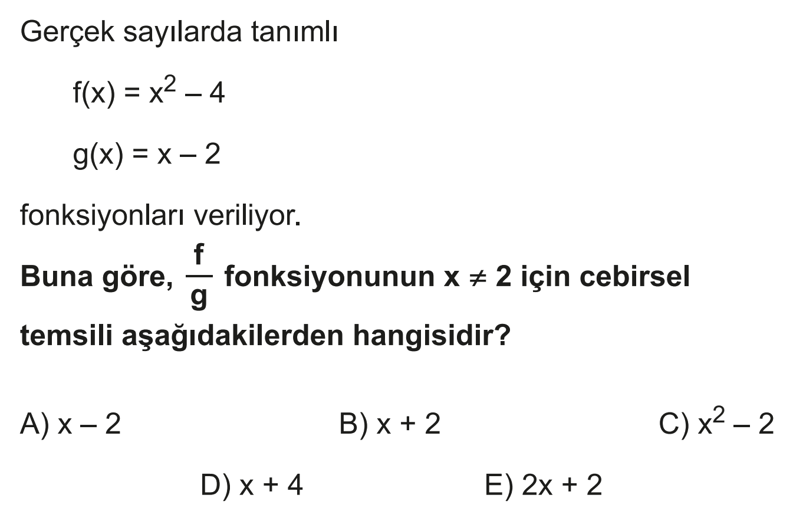
Çözüm
- $\dfrac{f(x)}{g(x)}=\dfrac{x^2-4}{x-2}$.
- $x^2-4=(x-2)(x+2)$.
- $x\ne2$ için $x+2$ (B).
Cevap: B
Soru 4Cevap: C
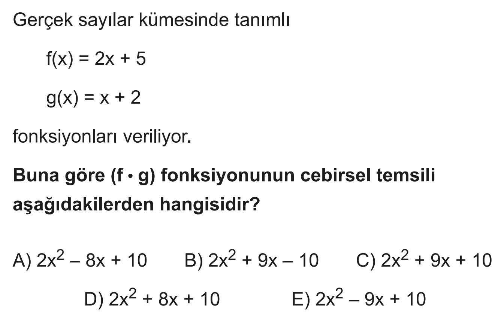
Çözüm
- $(f\cdot g)(x)=(2x+5)(x+2)$.
- $=2x^2+4x+5x+10$.
- $=2x^2+9x+10$ (C).
Cevap: C
Soru 5Cevap: B
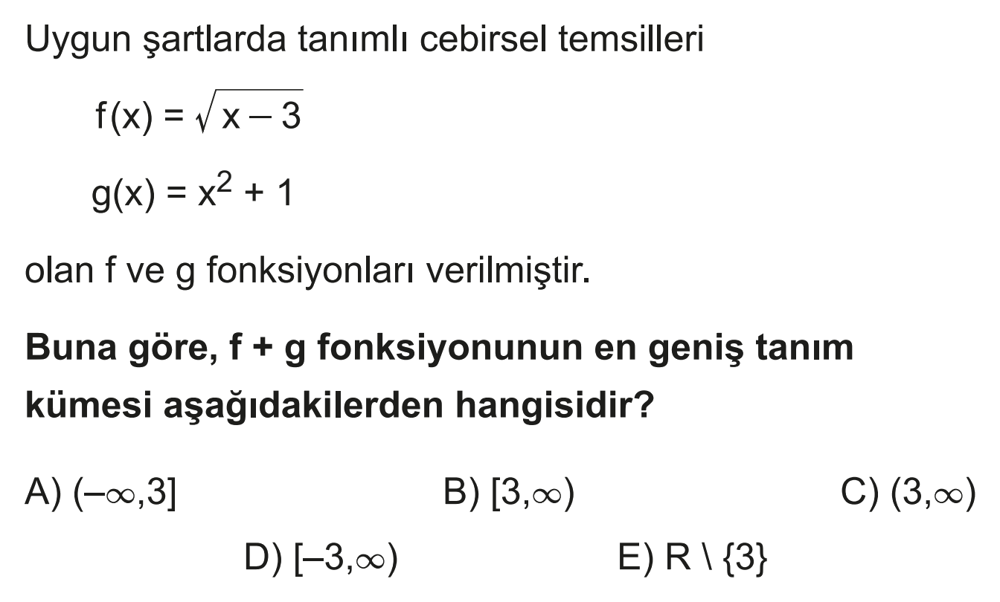
Çözüm
- $f(x)=\sqrt{x-3}$ için $x\ge3$.
- $g$ her gerçek sayıda tanımlı.
- Kesişim $[3,\infty)$ (B).
Cevap: B
Soru 6Cevap: C
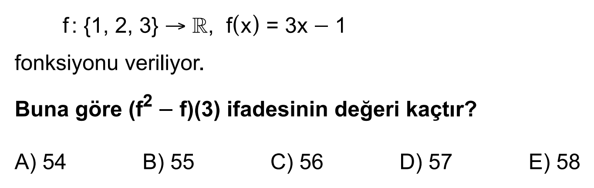
Çözüm
- $f(3)=3\cdot3-1=8$.
- $(f^2-f)(3)=f(3)^2-f(3)$.
- $64-8=56$ (C).
Cevap: C
Soru 7Cevap: C
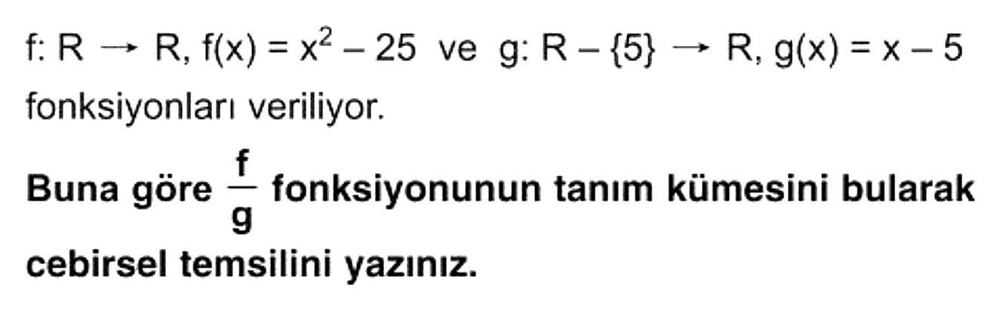
A)$\mathbb R$; $x-5$B)$\mathbb R-\{-5\}$; $x+5$C)$\mathbb R-\{5\}$; $x+5$D)$\mathbb R-\{5\}$; $x-5$E)$\mathbb R-\{\pm5\}$; $x+5$
Çözüm
- Payda $g(x)=x-5=0\Rightarrow x=5$ çıkarılır.
- $\dfrac{x^2-25}{x-5}=\dfrac{(x-5)(x+5)}{x-5}$.
- $\mathbb R-\{5\}$ ve $x+5$ (C).
Cevap: C
Soru 8Cevap: A
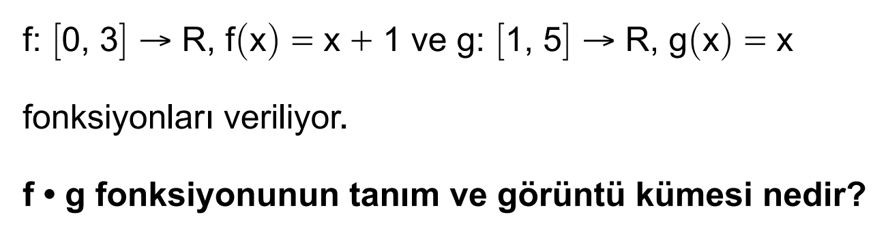
A)$[1,3]$; $[2,12]$B)$[0,5]$; $[0,30]$C)$[1,3]$; $[1,9]$D)$[0,3]$; $[0,12]$E)$[1,5]$; $[2,30]$
Çözüm
- Ortak tanım kümesi $[0,3]\cap[1,5]=[1,3]$.
- $(f\cdot g)(x)=(x+1)x=x^2+x$, bu aralıkta artan.
- $x=1\to2$, $x=3\to12$: $[2,12]$ (A).
Cevap: A
Soru 9Cevap: B
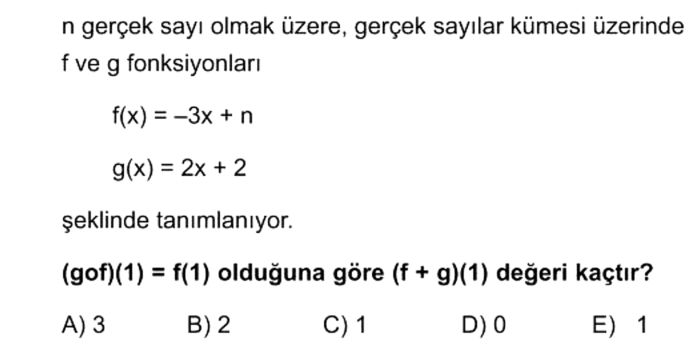
Çözüm
- $f(1)=n-3$; $(g\circ f)(1)=2(n-3)+2=2n-4$.
- $2n-4=n-3\Rightarrow n=1$.
- $f(1)=-2$, $g(1)=4$: $(f+g)(1)=2$ (B).
Cevap: B
Soru 10Cevap: C
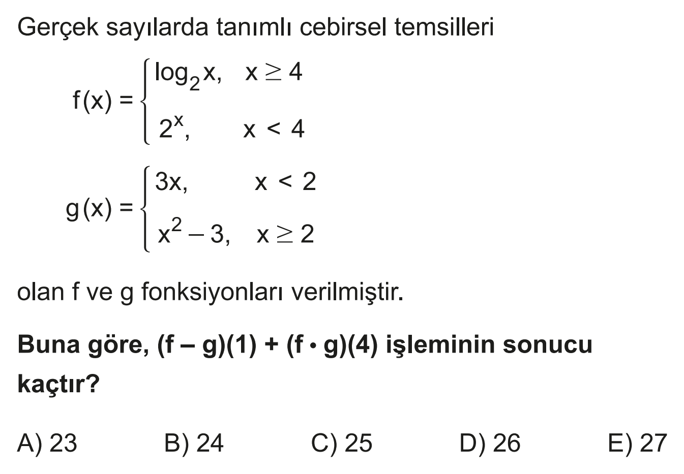
Çözüm
- $1\lt4$: $f(1)=2$; $1\lt2$: $g(1)=3$; $(f-g)(1)=-1$.
- $f(4)=\log_2 4=2$, $g(4)=16-3=13$: $(f\cdot g)(4)=26$.
- Toplam $25$ (C).
Cevap: C
Soru 11Cevap: A
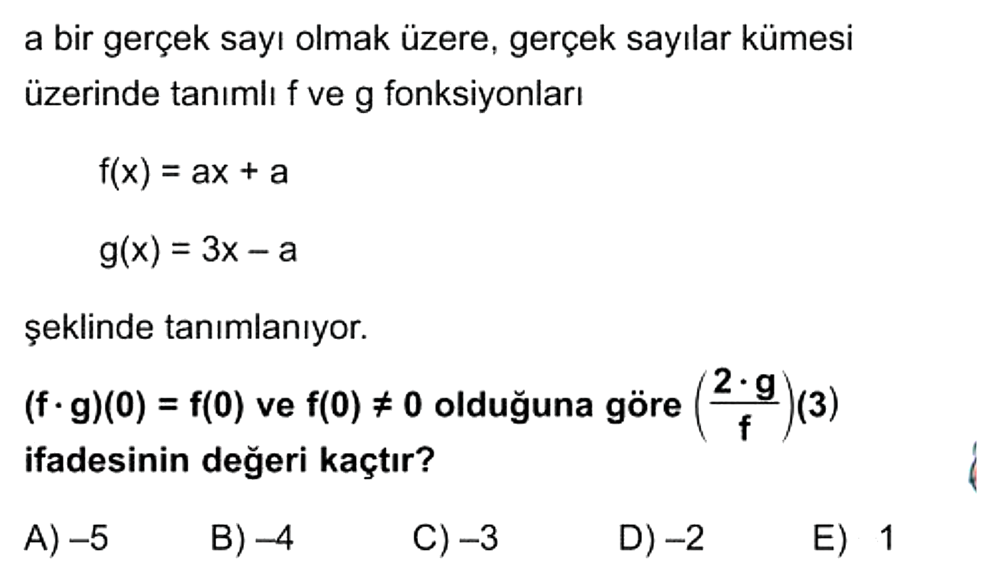
Çözüm
- $f(0)g(0)=f(0)$, $f(0)\ne0\Rightarrow g(0)=1$: $-a=1$, $a=-1$.
- $f(x)=-x-1$, $g(x)=3x+1$: $f(3)=-4$, $g(3)=10$.
- $\dfrac{2\cdot10}{-4}=-5$ (A).
Cevap: A
Soru 12Cevap: C
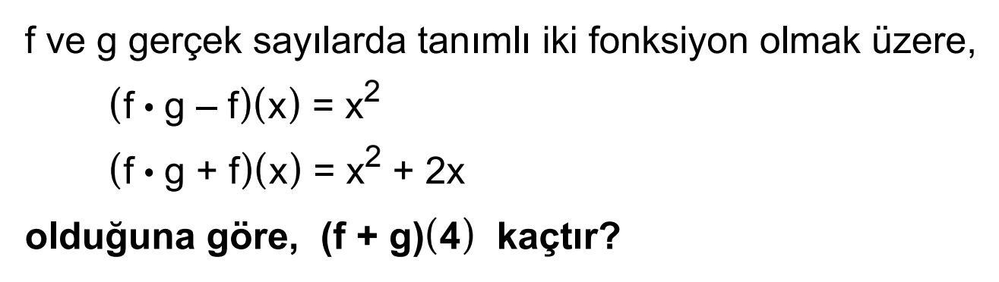
A)$7$B)$8$C)$9$D)$10$E)$11$
Çözüm
- İki eşitlik çıkarılırsa $2f(x)=2x\Rightarrow f(x)=x$.
- $x\cdot g(x)-x=x^2\Rightarrow g(x)=x+1$.
- $(f+g)(4)=4+5=9$ (C).
Cevap: C
Soru 13Cevap: A
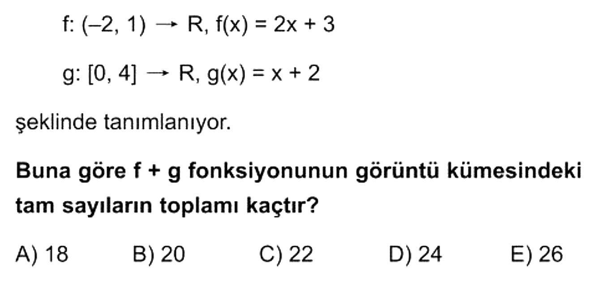
Çözüm
- Ortak tanım kümesi $(-2,1)\cap[0,4]=[0,1)$.
- $(f+g)(x)=3x+5$: görüntü kümesi $[5,8)$.
- Tam sayılar $5,6,7$; toplam $18$ (A).
Cevap: A
Soru 14Cevap: B
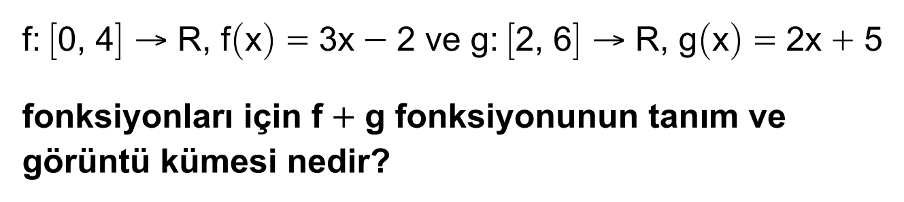
A)$[0,6]$; $[3,33]$B)$[2,4]$; $[13,23]$C)$[2,4]$; $[4,13]$D)$[0,4]$; $[3,23]$E)$[2,6]$; $[13,33]$
Çözüm
- Ortak tanım kümesi $[0,4]\cap[2,6]=[2,4]$.
- $(f+g)(x)=5x+3$, artan.
- Görüntü kümesi $[13,23]$ (B).
Cevap: B
Soru 15Cevap: B
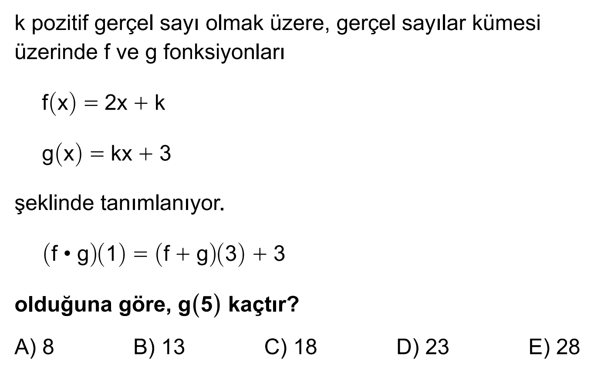
Çözüm
- $(f\cdot g)(1)=(2+k)(k+3)$, $(f+g)(3)=4k+9$.
- $(2+k)(k+3)=4k+12\Rightarrow k^2+k-6=0$; $k\gt0$: $k=2$.
- $g(5)=2\cdot5+3=13$ (B).
Cevap: B
Soru 16Cevap: A
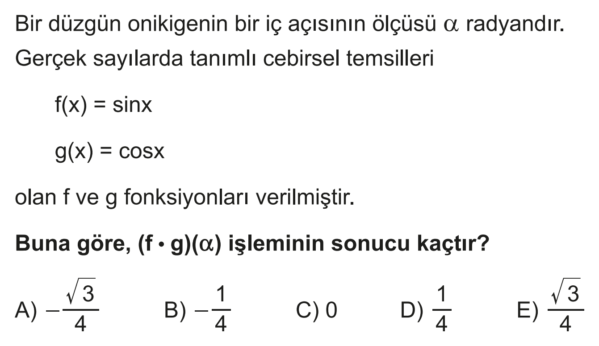
Çözüm
- Düzgün onikigenin bir iç açısı $\dfrac{(12-2)\cdot180^\circ}{12}=150^\circ$, yani $\alpha=\dfrac{5\pi}{6}$.
- $\sin150^\circ=\dfrac12$, $\cos150^\circ=-\dfrac{\sqrt3}{2}$.
- $(f\cdot g)(\alpha)=-\dfrac{\sqrt3}{4}$ (A).
Cevap: A
Soru 17Cevap: D
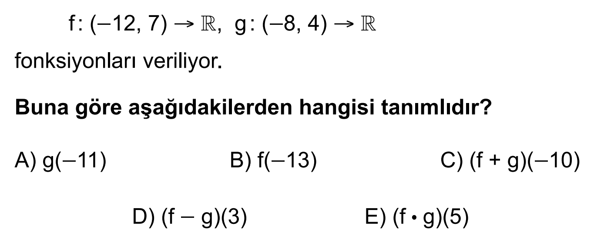
Çözüm
- $f$'nin tanım kümesi $(-12,7)$, $g$'ninki $(-8,4)$; ortak küme $(-8,4)$.
- $-11$, $-13$, $-10$ ya da $5$ ortak kümede değildir ya da ilgili fonksiyonun tanımında yoktur.
- $3\in(-8,4)$: $(f-g)(3)$ tanımlıdır (D).
Cevap: D
Soru 18Cevap: B
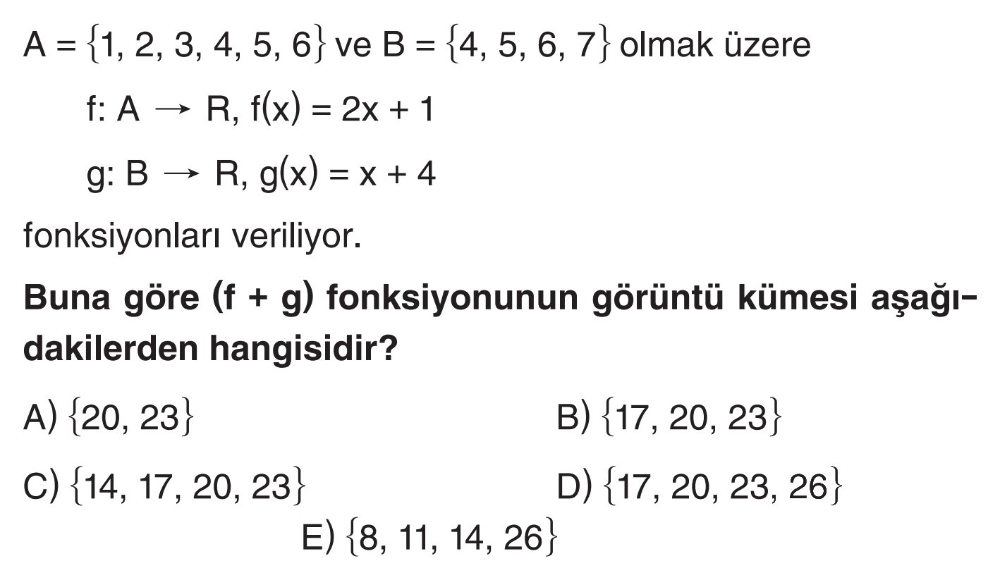
Çözüm
- Ortak tanım kümesi $A\cap B=\{4,5,6\}$.
- $(f+g)(x)=3x+5$.
- $x=4,5,6$ için $17,20,23$ (B).
Cevap: B
Soru 19Cevap: C
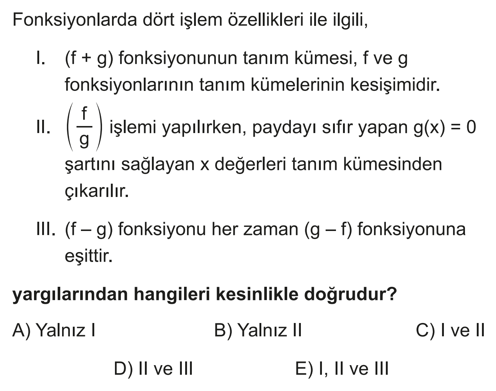
Çözüm
- $f+g$, ortak tanım kümesinde tanımlıdır: I doğru.
- Bölmede $g(x)=0$ yapan değerler çıkarılır: II doğru.
- $(f-g)(x)=-(g-f)(x)$; genelde eşit değildir: III yanlış (C).
Cevap: C
Soru 20Cevap: D
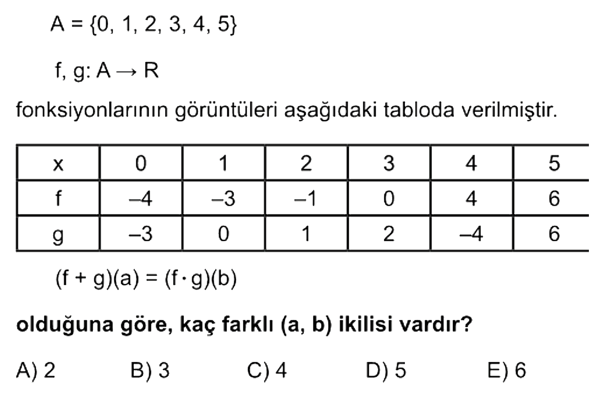
Çözüm
- $f+g$: $-7,-3,0,2,0,12$; $f\cdot g$: $12,0,-1,0,-16,36$ ($x=0,\dots,5$).
- $f+g=0$ ($a=2,4$) ve $f\cdot g=0$ ($b=1,3$): $4$ ikili; $f+g=12$ ($a=5$), $f\cdot g=12$ ($b=0$): $1$ ikili.
- Toplam $5$ ikili (D).
Cevap: D
Soru 21Cevap: A
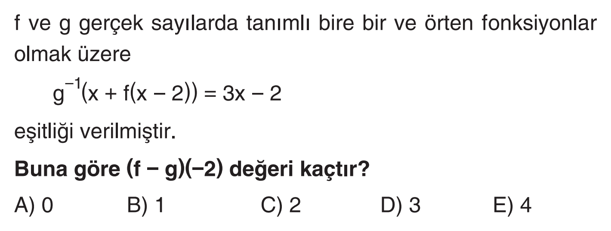
Çözüm
- Her iki tarafa $g$ uygulanır: $x+f(x-2)=g(3x-2)$.
- $x=0$: $f(-2)=g(-2)$.
- $(f-g)(-2)=0$ (A).
Cevap: A
Soru 22Cevap: D
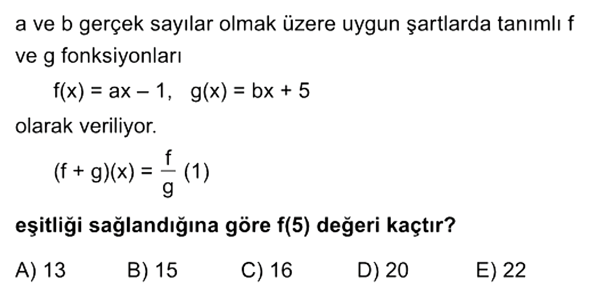
Çözüm
- $(f+g)(x)=(a+b)x+4$ sabit bir sayıya eşit: $a+b=0$.
- $4=\dfrac{f(1)}{g(1)}=\dfrac{a-1}{b+5}\Rightarrow a-1=4b+20$; $a=-b$ ile $b=-\dfrac{21}{5}$, $a=\dfrac{21}{5}$.
- $f(5)=21-1=20$ (D).
Cevap: D
Soru 23Cevap: D
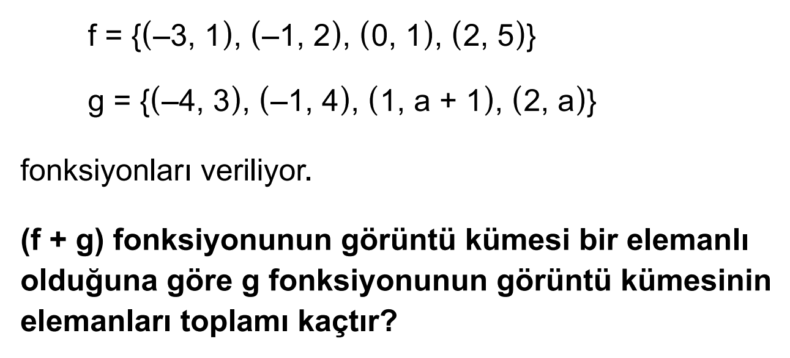
A)$7$B)$8$C)$9$D)$10$E)$11$
Çözüm
- Ortak tanım kümesi $\{-1,2\}$: $(f+g)(-1)=2+4=6$, $(f+g)(2)=5+a$.
- Görüntü kümesi tek elemanlı: $5+a=6\Rightarrow a=1$.
- $g$'nin görüntüleri $3,4,2,1$; toplam $10$ (D).
Cevap: D
Soru 24Cevap: B
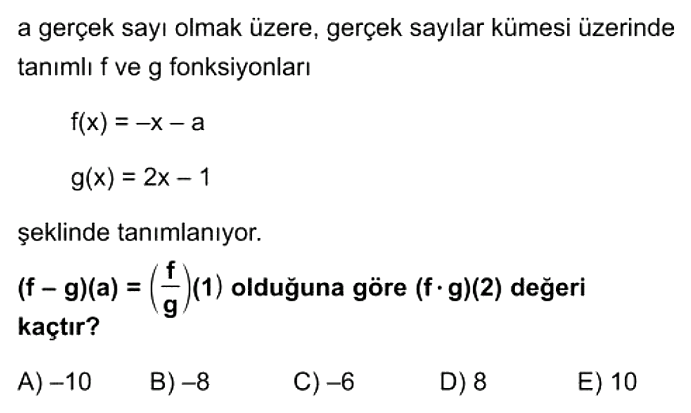
Çözüm
- $\left(\dfrac fg\right)(1)=\dfrac{-1-a}{1}$; $(f-g)(a)=-2a-(2a-1)=-4a+1$.
- $-4a+1=-1-a\Rightarrow a=\dfrac23$.
- $f(2)=-\dfrac83$, $g(2)=3$: $(f\cdot g)(2)=-8$ (B).
Cevap: B